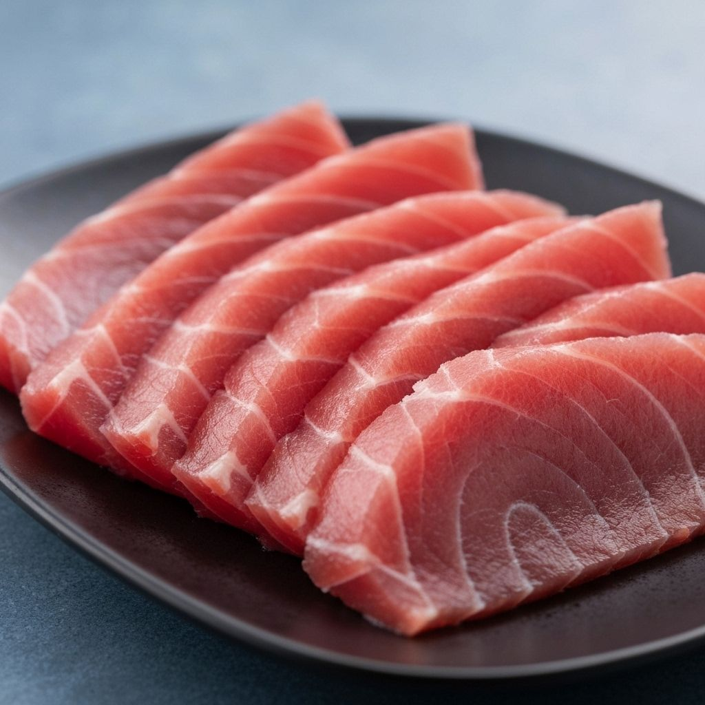

マグロ
Thunnus
赤身魚の代表格。DHAやEPAが豊富で、脳の活性化や血流改善に効果的です。
生息地: 太平洋・大西洋の暖海域
旬: 冬〜春

日本近海で獲れる魚の種類、栄養価値、旬の時期まで。
魚の魅力を深く知ることで、より豊かな食生活を実現しましょう。
日本の食卓を彩る、栄養豊富な魚たちをご紹介します
Thunnus
赤身魚の代表格。DHAやEPAが豊富で、脳の活性化や血流改善に効果的です。
生息地: 太平洋・大西洋の暖海域
旬: 冬〜春
Salmo salar
良質なビタミンDを含む魚。抗酸化作用のあるアスタキサンチンを多く含みます。
生息地: 北太平洋・北大西洋
旬: 秋〜冬
Scomber
青魚の代表。血液をサラサラにするEPAが豊富に含まれています。
生息地: 日本近海・太平洋
旬: 秋〜冬

Pagrus major
祝い事に欠かせない日本魚。淡白な味わいで高たんぱく低脂質です。
生息地: 日本近海
旬: 冬〜春
Trachurus japonicus
日本の食卓に欠かせない定番魚。骨まで食べられるカルシウム源です。
生息地: 日本近海
旬: 夏〜秋
Sardinops
小さくても栄養満点。カルシウムやDHAが豊富で成長期にもおすすめ。
生息地: 日本近海・太平洋
旬: 夏〜秋
魚を食べることで得られる、科学的に証明された健康メリット
オメガ3脂肪酸が心血管系の健康をサポートし、血圧を正常に保ちます。
DHAが脳の発達と認知機能の維持に重要な役割を果たします。
魚は豊富なタンパク質が筋肉の形成と修復を助けます。
ビタミンDやセレンが免疫機能を高め、健康を守ります。
それぞれの魚が持つ特徴的な栄養素を比較
| 魚の種類 | 主な栄養素 | カロリー（100g） | 特徴 |
|---|---|---|---|
| マグロ | DHA, EPA, タンパク質 | 約125kcal | 高タンパク・低脂肪 |
| サーモン | オメガ3, ビタミンD | 約200kcal | 抗酸化作用が高い |
| サバ | EPA, ビタミンB12 | 約247kcal | 血液サラサラ効果 |
| タイ | タウリン, ビタミンB1 | 約142kcal | 低カロリー高栄養 |
| アジ | カルシウム, タウリン | 約126kcal | 骨を丈夫に保つ |
| イワシ | カルシウム, DHA | 約217kcal | 栄養バランス抜群 |